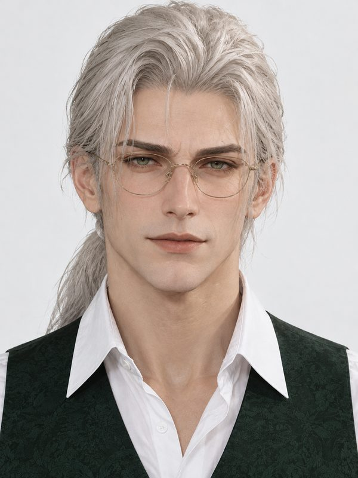
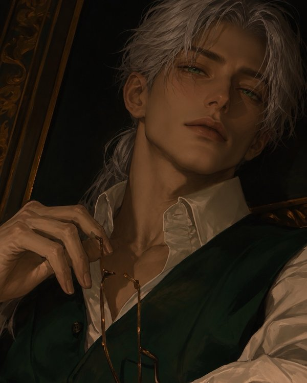

大港漁會 會長
江懷晝
- 年齡
- 50
- 身高
- 183
白色及肩長髮綁成馬尾，綠色眼睛，戴著一副眼鏡，總是帶著優雅的笑臉。
大港觀光導覽大港漁會 發行
嗨呀！
歡迎來到大港
大港漁產最佳代言人
連續幾年
最佳漁會
會長
這座很大的港灣養活了好幾代人，整個城鎮因此叫做大港。街上的每個角落，都看得到魚類的地磚、磁磚和彩繪。

大港漁會 會長
江懷晝
白色及肩長髮綁成馬尾，綠色眼睛，戴著一副眼鏡，總是帶著優雅的笑臉。
不少觀光客是看到這位帥氣的會長，才來到大港旅遊。
他說，那張小漁網隨時可以抓魚。
基本上，是拿來抓人用的。
導覽到這裡結束
以下海域，不對觀光客開放
十分友善。這是他要親手守護的光明面。
平易近人的高人氣會長。他覺得這裡是自己距離光明最近的地方。
既是兄弟，也是老大。很會開他玩笑，喜歡看他緊張。
斯文的外表底下，有黑道的冷漠與距離感，手段很直接。
收起平易近人的樣子，像風平浪靜的海轉為波濤洶湧。
鐵鉤 副手與代理人
江懷晝
代表自己的物件：漁網鐵鉤是從漁會分出來的黑道。漁會在明處，鐵鉤在暗處。
只要言鐶舂不在場，鐵鉤的事就交給他處理。他也代表鐵鉤與政府機構、企業交涉，協助言鐶舂推動黑道轉型。
漁網發射器綠色的小型發射器，貼著一張漁網貼紙。用了很多年，他視作「戰友」，非常寶貝。
靜靜觀察，摸清對方的底細才出手。
不做沒有把握的事。必須出手時，一定出手。
不傷害普通民眾，也不過度重傷黑道成員。
不在民眾面前提起鐵鉤。
兄弟
鐵鉤的老大。年輕時兩人爭過老大的位置，後來江懷晝把位置讓給了他。江懷晝覺得黑道轉型的想法很蠢、很可愛，還是選擇支持，也曾在他的錢包裡放夜總會的名片。
對手
幫主施十鉞帶領的新生代地下組織，目標是剷除鐵鉤。江懷晝暗中派手下阻擋，想在言鐶舂不知情的情況下剷除他們，替兄弟分憂。
附註：他水性很好，私底下會衝浪。這件事沒有人知道。

安靜的時候，他是一張靜靜躺著的漁網。動手的時候，必定手到擒拿。